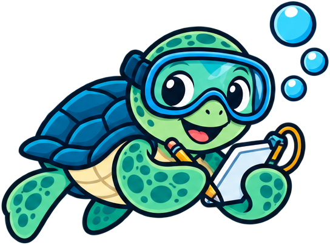

Free for every diver
Your dives. Your data.
DiveFolk is a free home base for divers. Start with the DiveFolk Commons: plain-word guides for people thinking about diving, new divers and anyone who wants to understand their dive tech, plus AI help, weekly news and trip reports.
When you're ready, our free DiveFolk Logbook cleans up your dives and gets them ready to keep or move, whatever computer, app or paper logbook you use. Nothing to install.
Free. No ads. No tracking. Your dive files stay on your computer.

- Site
- Champagne Reef, Dominica
- Date
- Jun 14, 2026
- Time in
- 10:05 AM
- Max depth
- 58 ft
- Bottom time
- 42 min
- Air in
- 3,000 psi
- Air out
- 700 psi
- Water
- 79 °F
- Visibility
- 60 ft
- Buddy
- Pat
New this week
What's new on DiveFolk
New pages
- Willow Springs, Pennsylvania A training quarry with a sunk Learjet and a 72-foot trawler.
- Summersville Lake, West Virginia Clear water and 100-foot cliffs, open for diving in summer.
- Lake Allure, Pennsylvania A small, quiet weekend quarry about 2¼ hours from DC.
- Where to dive near DC Every local site, with drive times from downtown DC.
DiveFolk News, week of November 23, 2026
- Garmin Descent G1 update improves cold-water buttons and fixes random dive locations Dive tech update
- US regulators warn snorkellers to stop using some Qing Song full-face masks Training and safety
- Cyprus weighs licensing rules for dive centres Training and safety
Start here · Free guides
The DiveFolk Commons
Free guides in plain words, kept up to date. Pick the one that fits you.
Thinking about diving?
Try it in a pool first, what a course involves and how to pick a dive shop.
New to diving
Your first trips, first gear and first year, plus guides on tanks, wetsuits, ears and diving with a newer buddy.
Where to dive near DC
Quarries, lakes and wrecks within a drive, with prices, rules and drive times.
Technology Explained
Dive computers, split dives, dive log apps and keeping your log safe.
Free tool Beta
DiveFolk Logbook
Clean up your dives before you keep or move them: join split dives, fix wrong times and match your paper logbook to your computer dives. Works with Shearwater and Garmin files, runs in your browser, and your files never leave your computer.
It isn't a full logbook app. Take the clean file to a spreadsheet or to a free app like Submersion or Subsurface. Which dive log app? No dive computer? Get our free dive log spreadsheet.

Tell us a little about your diving so we know who's using DiveFolk and what to build next. Your dive files still stay on your computer.